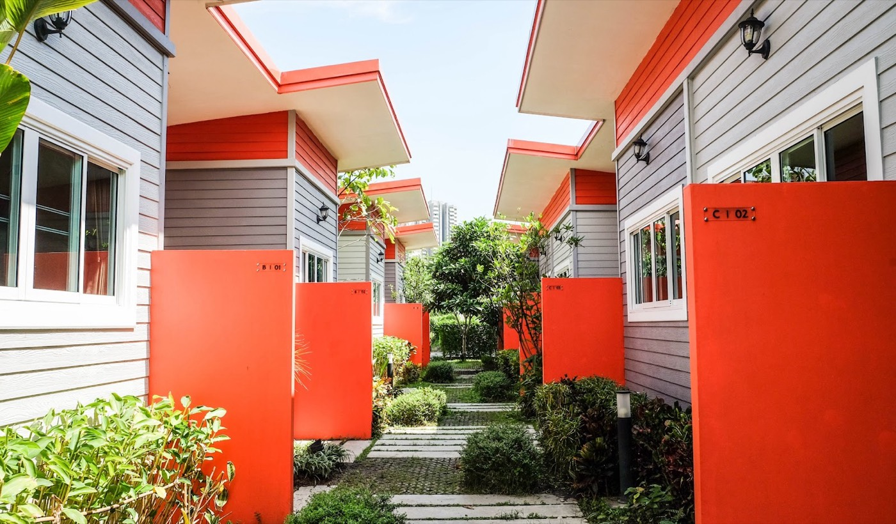

ที่จอดรถงานอิมแพ็ค เมืองทอง จอดที่ไหนดี? (ช่วงคอนเสิร์ต/งานใหญ่)

หนึ่งในเรื่องปวดหัวที่สุดของการไปงานที่ อิมแพ็ค เมืองทองธานี โดยเฉพาะช่วงมีคอนเสิร์ตหรืองานแสดงสินค้าใหญ่ ก็คือ "ที่จอดรถ" — วนหาที่จอดนาน, จอดไกลต้องเดินเยอะ, และตอนขากลับก็ติดยาวกว่าจะออกได้ บทความนี้รวมทางเลือกที่จอดรถ พร้อมทริกที่ช่วยให้คุณไม่ต้องเสียเวลาแย่งที่จอด
ที่จอดรถภายในอิมแพ็คมีที่ไหนบ้าง
อิมแพ็คมีลานจอดรถหลายจุดกระจายตามอาคาร ทั้ง IMPACT Arena, Challenger, Exhibition Center และอาคารจอดรถ (ที่จอดในร่ม) รวมถึงลานจอดรอบทะเลสาบ โดยทั่วไปเพียงพอสำหรับวันปกติ แต่ ช่วงมีงานใหญ่หรือคอนเสิร์ตดัง ที่จอดมักเต็มเร็ว และค่าจอด/โซนที่เปิดให้จอดจะขึ้นอยู่กับแต่ละงาน
- ควรเผื่อเวลามาถึงก่อนงานเริ่มอย่างน้อย 1-2 ชั่วโมงในวันที่มีงานใหญ่
- ตรวจสอบโซนจอดและค่าบริการของงานนั้นๆ กับผู้จัดหรือเพจอิมแพ็คก่อนเดินทาง
- ขากลับหลังงานเลิกพร้อมกัน รถมักติดสะสมที่ทางออก ต้องใจเย็น
ทางเลือกที่สบายกว่า: จอดที่พักใกล้ๆ แล้วนั่งรถเข้าฮอลล์
ทริกที่คนไปงานบ่อยๆ ใช้กันคือ ไม่เอารถเข้าไปแย่งจอดในฮอลล์ แต่ไปจอดที่ที่พักใกล้ๆ แทน แล้วนั่งวิน/แท็กซี่เข้างานระยะสั้นๆ ข้อดีคือ:
- ที่จอดแน่นอน ไม่ต้องวนหา ไม่ต้องเผื่อเวลาเยอะ
- ขากลับไม่ต้องติดอยู่ในลานจอด เรียกรถกลับที่พักได้เลย
- ถ้างานเลิกดึก มีที่พักรออยู่ใกล้ๆ ทิ้งตัวนอนได้ทันที ไม่ต้องขับรถกลับไกล
ที่ โรงแรมบ้านเพิ่มสุข มี ที่จอดรถกว้างขวางฟรี ห่างจากอิมแพ็คเพียง 7-10 นาที และมีบริการช่วยเรียกวิน/แท็กซี่ให้ถึงหน้าห้องพัก จอดปุ๊บ เดินเข้าห้องได้เลย — เหมาะมากสำหรับคนที่มางานแล้วไม่อยากปวดหัวเรื่องที่จอด
| หัวข้อ | รายละเอียด |
|---|---|
| ค่าที่จอดรถ | ฟรีสำหรับผู้เข้าพัก ไม่ต้องจองล่วงหน้า |
| ประเภทรถที่จอดได้ | รถเก๋ง รถตู้ และรถกระบะ จอดค้างคืนได้ |
| ระยะทางถึงอิมแพ็ค | 3.8 กิโลเมตร · ราว 7-10 นาทีโดยรถ |
| การเดินทางเข้าฮอลล์ | โรงแรมช่วยเรียกวิน/แท็กซี่ให้ถึงหน้าห้องพัก |
| เวลาเช็คอิน | 24 ชั่วโมง กลับดึกหลังงานเลิกได้ |
| ราคาห้องเริ่มต้น | 1,090 บาท/คืน รวมอาหารเช้า Wi-Fi และที่จอดรถ |
จอดฟรีที่บ้านเพิ่มสุข พักใกล้งาน แล้วให้เราช่วยเรียกรถเข้าฮอลล์ให้
สอบถาม & จองผ่าน LINEคำถามที่พบบ่อยเรื่องที่จอดรถงานอิมแพ็ค
จอดรถที่โรงแรมบ้านเพิ่มสุขเสียค่าจอดเพิ่มไหม?
ไม่เสียครับ ที่จอดรถในบริเวณโรงแรมฟรีสำหรับผู้เข้าพัก ไม่มีค่าใช้จ่ายเพิ่มและไม่ต้องจองล่วงหน้า ลานจอดกว้าง ไม่ต้องวนหาที่หรือจอดซ้อนคัน
จากบ้านเพิ่มสุขไปอิมแพ็ค เมืองทองธานี ไกลแค่ไหน?
ห่างประมาณ 3.8 กิโลเมตร ใช้เวลาเดินทางด้วยรถราว 7-10 นาที ทางโรงแรมช่วยเรียกวินหรือแท็กซี่ให้ถึงหน้าห้องพักได้
เอารถตู้หรือรถกระบะขนของมาจอดได้ไหม?
จอดได้ครับ ลานจอดรองรับรถตู้และรถกระบะ และจอดค้างคืนได้ แนะนำให้แจ้งล่วงหน้าทาง LINE เพื่อให้เราเตรียมพื้นที่ไว้
งานเลิกดึกแล้วกลับเข้าที่พักได้ไหม?
ได้ครับ โรงแรมมีพนักงานดูแลและเช็คอินได้ตลอด 24 ชั่วโมง กลับดึกหลังคอนเสิร์ตหรือหลังรื้อบูธก็เข้าห้องได้ทันที
ห้องพักราคาเริ่มต้นเท่าไหร่ รวมอะไรบ้าง?
ห้องมาตรฐานเริ่มต้น 1,090 บาทต่อคืน รวมอาหารเช้า Wi-Fi แอร์ ทีวี ตู้เย็น น้ำอุ่น และที่จอดรถฟรีอยู่ในราคาแล้ว
สรุป
ถ้ามาวันปกติ จอดในอิมแพ็คก็สะดวก แต่ถ้ามาช่วงคอนเสิร์ต/งานใหญ่ การจอดที่พักใกล้ๆ แล้วนั่งรถเข้างานจะช่วยประหยัดเวลาและความเหนื่อยได้มาก โดยเฉพาะถ้าเป็นงานที่เลิกดึก